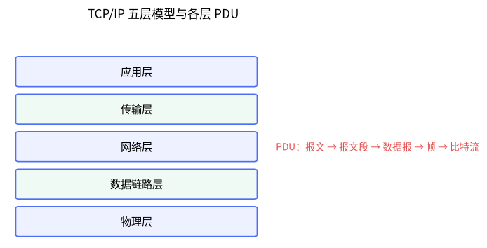

class Solution:
def maximumLengthSubstring(self, s: str) -> int:
cnt = {}
left = ans = 0
for right, ch in enumerate(s):
cnt[ch] = cnt.get(ch, 0) + 1
while cnt[ch] > 2:
cnt[s[left]] -= 1
left += 1
ans = max(ans, right - left + 1)
return ans
🚀 去 LeetCode 做题 →
